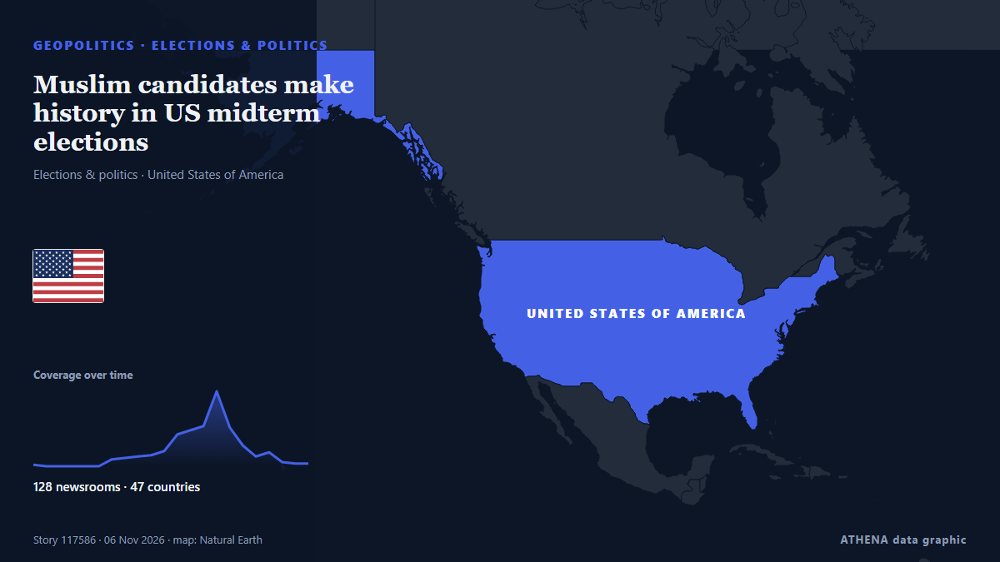

Muslim candidates make history in US midterm elections

Informado de forma independiente por 128 medios de 47 países desde el 31 oct; el primero fue Los Angeles Times (World); la cobertura va perdiendo fuerza. ATHENA califica el riesgo como moderado (3.0/10), sobre todo por la gravedad del daño descrito y su alcance geográfico y sectorial. La confianza es del 89 % (alta): lo corroboran 128 medios independientes, con una fiabilidad media de las fuentes del 72 %. Medios por país: Estados Unidos (18), Sudáfrica (4), India (3). Cobertura: del 31 oct al 3 nov, 67 horas.
Por qué importa: Los hechos de seguridad y diplomacia pueden alterar alianzas, comercio y mercados mucho más allá de los países implicados.
Qué ha cambiado: 19 informaciones nuevas de 17 redacciones en las 24 horas hasta el 6 nov.
Primer titular: Diaspora leaders say US mid-terms carry high stakes for democracy, Caribbean
Los titulares se muestran en inglés, tal como se publicaron.
De un vistazo
Seleccionado, puntuado y redactado por la metodología publicada de ATHENA. Ningún editor interviene en eventos concretos. Cómo se elabora ›
| 31 Oct 18:10 UTC | 1 |
|---|---|
| 01 Nov 00:10 UTC | 0 |
| 01 Nov 06:10 UTC | 0 |
| 01 Nov 12:10 UTC | 0 |
| 01 Nov 18:10 UTC | 0 |
| 02 Nov 00:10 UTC | 0 |
| 02 Nov 06:10 UTC | 4 |
| 02 Nov 12:10 UTC | 6 |
| 02 Nov 18:10 UTC | 7 |
| 03 Nov 00:10 UTC | 8 |
| 03 Nov 06:10 UTC | 11 |
| 03 Nov 12:10 UTC | 22 |
| 03 Nov 18:10 UTC | 26 |
| 04 Nov 00:10 UTC | 29 |
| 04 Nov 06:10 UTC | 54 |
| 04 Nov 12:10 UTC | 28 |
| 04 Nov 18:10 UTC | 15 |
| 05 Nov 00:10 UTC | 7 |
| 05 Nov 06:10 UTC | 10 |
| 05 Nov 12:10 UTC | 3 |
| 05 Nov 18:10 UTC | 2 |
| 06 Nov 00:10 UTC | 2 |
| 04 Nov 06:57 UTC | 2.5 |
|---|---|
| 04 Nov 07:17 UTC | 3.4 |
| 06 Nov 05:07 UTC | 3.0 |
Por qué estas cifras
Importancia
Riesgo
Confianza
La cobertura: quién informó y cuándo
titular tal como se publicó · abre el original- Los Angeles Times (World) · Estados UnidosCascade of court rulings rebuffs Trump administration's election efforts
- Xinhua (English) — page reader · ChinaDisapproval outpaces approval for S. Korean president's state administration: poll
- The Intercept · Estados UnidosWarnings About ICE at the Polls Risk Their Own Kind of Voter Suppression
- KQED News (San Francisco) · Estados UnidosThe Election Fraud Evangelizers Targeting Rural Californians
- The Africa Report · FranciaUS-Africa Week Ahead: Mid-term elections could spell trouble for Trump’s opaque deals
- Just Security · Estados UnidosConstitutional Collision Course
- The Hill · Estados UnidosTrump disapproval hits record 60 percent in new survey
- Law and Crime · Estados UnidosEmergency motion asks judge to restrain Trump DOJ's 'drastic break' from normalcy and 'halt their intimidation' of voters at polls
- The Hindu · IndiaCPI(M) seeks action against Pendurthi MLA over alleged irregular voting in GVMC polls
- Wired · Estados UnidosHere’s How the Trump Administration Is Trying to Undermine the Election
- Daily Maverick · SudáfricaAfter The Bell: The wonderful and strange business of prognostication
- CommonDreams · Estados UnidosJudge denies another Trump administration attempt to meddle with voter data in Common Cause v. DOJ
- Business Insider · Estados UnidosStudent-loan borrowers face 'imminent' harm from Trump's plan to limit borrowing for advanced degrees, judge says
- Law and Crime · Estados UnidosJudge presses DOJ lawyer to tell him why hundreds more poll monitors are needed, gets same answer over and over again
- Professional Mariner · Estados UnidosNovember sinking planned for historic ‘SS United States’
- Variety · Estados UnidosFox News Sets Midterm Elections Coverage: Here’s How to Stream ‘Democracy 26’ Online Free
- Courthouse News · Estados UnidosJudge keeps block on DOJ action after hearing arguments about ‘unreliable’ voter list
- Mississippi Today · Estados Unidos‘Red flag’: Voter inactivations surge in midterms since secretary of state adopted unverified Experian data to clean voter rolls
- The Jerusalem Post · IsraelSecond Israeli national arrested in US federal voter fraud sweep
- KQED News (San Francisco) · Estados UnidosDozens of Californians Face Voter Fraud Charges. But Proving the Violations May Be Difficult
- Euractiv · BélgicaWhy EU foie gras producers will keep an eye on US midterms
- SABC News · SudáfricaVoters reminded not to take pictures inside polling booths
- The Hindu · IndiaAndhra civic polls result highlights: NDA heads for sweep; Jagan says ‘selections, not elections’
- Sydney Morning Herald · AustraliaA blue tidal wave is coming for Trump. But some polling experts are nervous
- The Irish News (Belfast) · Reino UnidoTom Collins: Rejoice! Today is beginning of end of Donald J Trump
- Jamaica Gleaner · JamaicaDiaspora leaders say US mid-terms carry high stakes for democracy, Caribbean
- The Jerusalem Post · IsraelJudge blocks Trump administration from pressuring states over noncitizen voting
- RFI English · FranciaIn Miami’s Little Haiti, ‘Blood’ looks past Trump’s rhetoric as US midterms loom
- Sydney Morning Herald · AustraliaEx-cops join election security flying squad in major crackdown
- Times of India · IndiaHow Indian-Americans may vote in 2026 US midterms: Explained in 5 charts
- New York Focus · Estados UnidosIt’s Election Day in New York. Here’s What You Need to Know
- FXStreet · EspañaUS voters go to the polls as US strikes Qeshm hours after Brent’s 7.6% drop on peace hopes
- The Hill · Estados UnidosYour hour-by-hour guide to 2026 midterm elections
- Al Jazeera English · CatarAlaska Senate candidates trade accusations ahead of election
- IOL · SudáfricaeThekwini voters must judge parties by their record, not their promises
- Newstalk · IrlandaLeo Varadkar: "People have to be prepared for the midterm results to be disputed"
- Yonhap (English) · Corea del SurKorean American candidates vie for congressional, gubernatorial seats in U.S. midterms
- APA (English) · AzerbaiyánEarly voting in US midterm elections reaches record 58.7 million
- IOL · SudáfricaMarches banned, 24-hour shifts ordered as KZN police face severe election strain
- The Hill · Estados UnidosOn this Election Day, and in the days to come, get ready to defend your vote